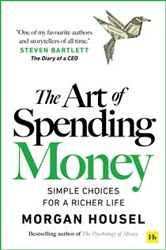

Library › Money & Finance
The Art of Spending Money — Summary & Key Lessons

Simple choices for a richer life — the sequel question to getting money: how do you spend it without regret?
📖 OPEN THE FULL INTERACTIVE BREAKDOWN →🌐 Read it in Hindi, Hinglish, Gujarati, Tamil & 22 more languages — free, with audio.
💡 The Big Idea
After teaching the world how to save and invest, Housel tackles the neglected half of money: spending it. There's no formula — it's an art. Social comparison is a treadmill with no end; frugality can become as pathological as extravagance; and the best purchases are the ones aligned with your actual personality and values, not the audience in your head. The goal isn't maximum net worth — it's the life where money causes neither anxiety nor regret: independence, experiences with people you love, and the quiet luxury of not caring what strangers think.
🧠 The 7 Key Lessons
Lesson 1: The Treadmill of Social Comparison
Part 1: Why We Buy What We Buy
Much of our spending isn't for ourselves — it's a performance for others, and the audience is barely watching. Social comparison is a treadmill: every rung you climb reveals a new rung above, so satisfaction stays permanently one purchase away. The antidote isn't more income (the treadmill scales infinitely — millionaires envy billionaires); it's stepping off: measuring your spending against YOUR needs and values, not against neighbors, feeds, and colleagues whose finances you can't even see.
📖 Example: Housel's recurring observation: people buy the German sedan to impress a neighbor who is, at that exact moment, worrying about impressing someone else. The full chain of admirers is empty — everyone is a performer, nobody is in the audience. Meanwhile social… Read the full example →
⚡ Do this: Before any significant purchase, ask the filter question: 'Would I still buy this if no one could ever see it or know about it?' If no — you're buying applause, and it's not for sale.
Lesson 2: Frugality Can Be a Disease Too
Part 2: The Other Ditch
The under-discussed failure mode: people who spent decades in scarcity often CAN'T spend when they finally can — saving mutated from tool into identity, and every purchase feels like sin. Housel calls out the retirees with seven figures who agonize over a restaurant bill: money's purpose is a better life, and dying with the high score is not a victory condition. If saving causes you anxiety AND spending causes you anxiety, money has fully defeated its purpose. Frugality should be a strategy you deploy, not a cage you live in.
📖 Example: The investing world's quiet tragedy: stories like the millionaire-next-door types who wear tattered coats past 80, deny themselves comfort, medical care, and generosity — then leave fortunes to heirs who spend them in years. All sacrifice, no life. Housel… Read the full example →
⚡ Do this: If you're a chronic under-spender: schedule one deliberate, guilt-free purchase this month in the category that genuinely delights you. Treat it as training the atrophied muscle.
Lesson 3: Independence Is the Best Thing Money Buys
Part 3: What Money Is Actually For
The highest-ROI purchase available is autonomy: every dollar saved is a piece of your future time bought back from obligation. Independence isn't a binary cliff at retirement — it's a dial: F-you money starts as 'take-this-weekend-off money,' becomes 'switch-careers money,' matures into 'wake up and choose everything money.' Spend in the order that maximizes control over your life first, comfort second, status a distant last. Nobody on the treadmill can outspend someone who is already free.
📖 Example: Housel's own confession: he and his wife keep an 'irrationally' high cash allocation and paid off a low-interest mortgage against all spreadsheet advice — because the independence and sleep it buys outperforms the foregone returns in the only currency that… Read the full example →
⚡ Do this: Reframe your savings: label accounts by the freedom they buy ('6 months of NO', 'career-change fund') instead of abstract numbers. Fund freedom before funding lifestyle upgrades.
Lesson 4: Buy Experiences — But Actually, Buy Alignment
Part 3: Spending Well
The standard advice 'experiences beat things' is half-right: the real rule is ALIGNMENT — spend heavily on what genuinely matters to your specific personality, and ruthlessly cut what doesn't. For one person that's travel; for another it's a perfect chair used 3,000 hours a year. Anticipation and memory are where most experiential happiness lives (often more than the event itself), and shared experiences compound like equity — the dinner with old friends appreciates for decades. Copying anyone else's spending template, including the anti-materialist one, is the same error in a different shirt.
📖 Example: Housel notes the strange math of memory: people rate vacations higher in retrospect than during them (rain and lost luggage fade; the sunset stays). And the purchases people report NEVER regretting cluster tightly: time with family, health, learning, and… Read the full example →
⚡ Do this: List your last 10 significant purchases. Score each 1–10 on delivered happiness. The pattern IS your personal spending formula — reallocate this year's budget toward your 8+ categories.
Lesson 5: The Price of Flaunting: Wealth Is What You Don't See
Part 4: Status, Envy & the Scoreboard
Spending money to display money is the fastest way to have less of it — every visible status symbol is capital that stopped compounding so strangers could ignore it. True wealth is the unseen part: the investments, the options, the absence of financial fear. Moreover, flaunting invites the worst audience: envy from those below, contempt from those above, and targets on your back from everyone. The genuinely rich increasingly practice stealth wealth precisely because they've learned the signal buys nothing worth having.
📖 Example: The Vanderbilt lesson Housel loves: the family's competitive mansion-building and yacht-racing — pure scoreboard spending — burned through the greatest fortune in American history within about three generations. Meanwhile, invisible-wealth archetypes like… Read the full example →
⚡ Do this: Run a 'display audit': identify your three most visible expenses. For each, ask what it costs annually versus what it actually delivers to YOUR daily experience. Cut or downgrade the worst performer.
Lesson 6: Money and Happiness: The Correlation Everyone Misreads
Part 5: The Point of It All
Money and happiness correlate — up to the point where survival and comfort are secured — then the curve flattens while expectations keep climbing. The trap: rising income silently raises the baseline (hedonic adaptation), so each upgrade becomes tomorrow's normal, and contentment stays exactly one raise away. Happiness, Housel argues, is results minus expectations: managing the denominator (wants) is as powerful as growing the numerator (wealth), and far more within your control. Gratitude is not a platitude here — it's arithmetic.
📖 Example: Housel's framing device: a middle-class family today lives with comforts — anesthesia, air conditioning, video calls with distant family, antibiotics — that John D. Rockefeller, the richest man in modern history, could not buy at ANY price. By any objective… Read the full example →
⚡ Do this: Practice expectation management deliberately: once a week, write three things your current money already buys that your 10-years-ago self would call luxury. Raise wealth OR lower wants — both move the same needle.
Lesson 7: No Formula: Craft Your Own Art
Closing: Simple Choices for a Richer Life
Housel refuses to end with rules, because spending well is personal by definition: the same purchase is wisdom for one person and waste for another. The meta-principles: know yourself (your history with money explains your instincts — audit them), keep money a tool rather than a master, prefer regret-minimization over optimization, build in the flexibility to change your mind (you will), and remember the endgame — a life where money enabled connection, health, autonomy, and meaning. The richest person isn't the one with the most, but the one who wants what they have.
📖 Example: The book's quiet thesis embodied: Housel — arguably the most influential finance writer of his generation, with every optimization tool at his disposal — describes his own money life as deliberately simple: index funds, cash, a paid-off house, and spending… Read the full example →
⚡ Do this: Write your personal spending constitution: 5 sentences covering what you'll always fund, never fund, and why. Review it yearly — and let it evolve as you do.
✅ 5-Step Action Plan
- Apply the invisibility test to every major purchase this quarter.
- Fund independence first: label savings by the freedom they buy.
- Score your last 10 purchases and reallocate toward your true 8+ categories.
- Run the display audit — cut the worst-performing status expense.
- Draft your 5-sentence spending constitution and review it yearly.
⚠️ When This Doesn't Work
Spending wisdom assumes you already have the money problem solved — the harder half is what happens after the money arrives. MC Hammer earned over $33 million at his peak and went bankrupt anyway, not because he didn't know how to spend, but because nobody had taught his entourage — and the entourage's spending had no governor. The book's advice works when the decision-maker controls the money; the moment success brings in advisors, family and hangers-on, the spending art becomes a committee and committees spend.
💀 The Graveyard Proves It
🔨 MC Hammer — $33 Million Burned in Three Years. Burn: Peak wealth ~$33M → bankruptcy with $13M debt. Read the full case study →
💬 Best Quotes from The Art of Spending Money
- “Money is a tool you can use. But if you're not careful, it will use you.”
- “The person who wants nothing they don't have may be richer than the billionaire who wants more.”
- “Spending money to show people how much money you have is the fastest way to have less money.”
Interactive version: mark lessons as read, listen in your language, share quote cards.